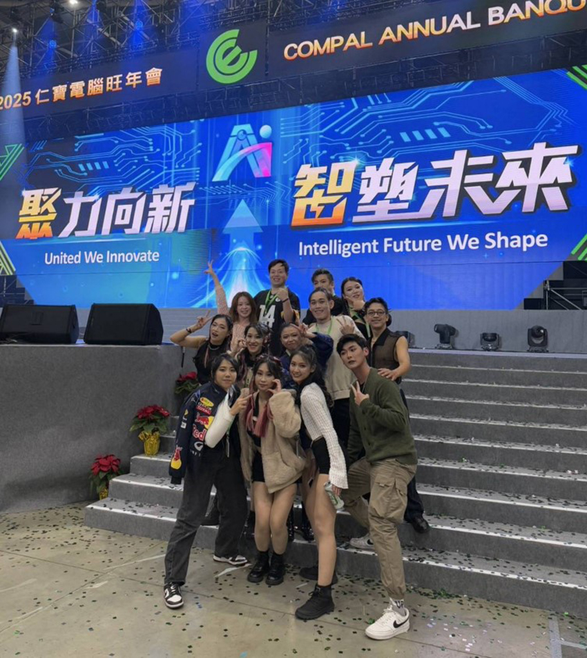
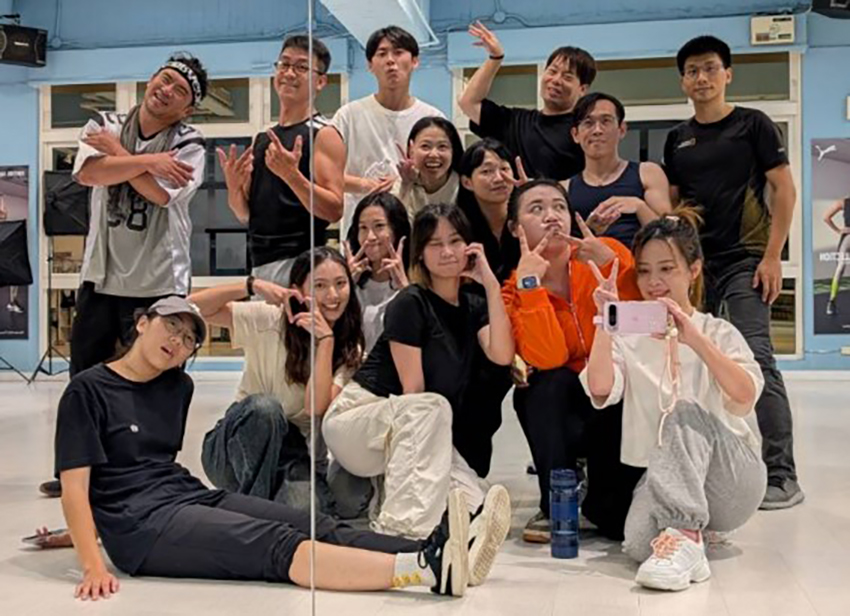
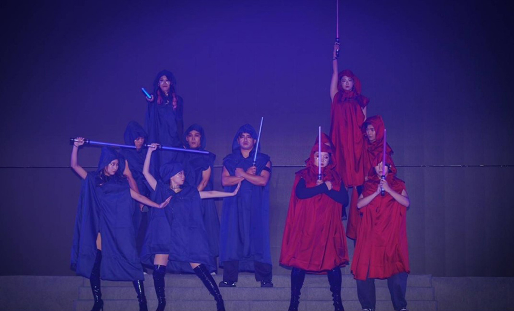
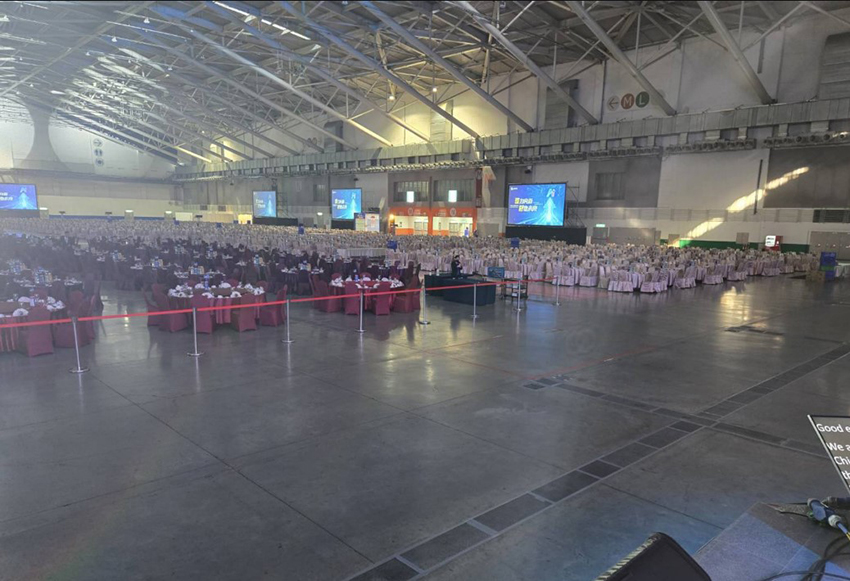
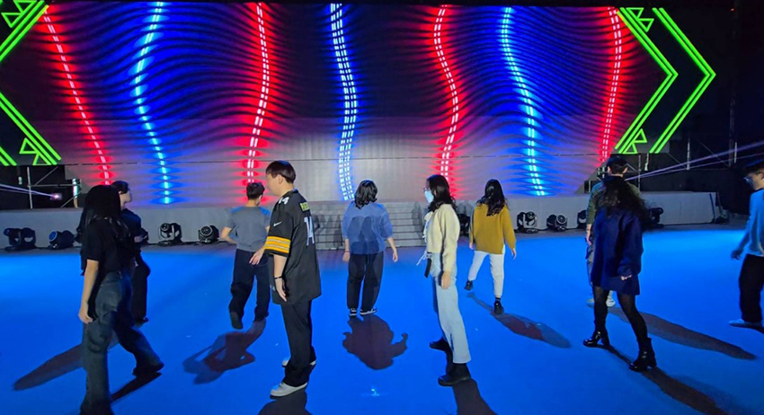
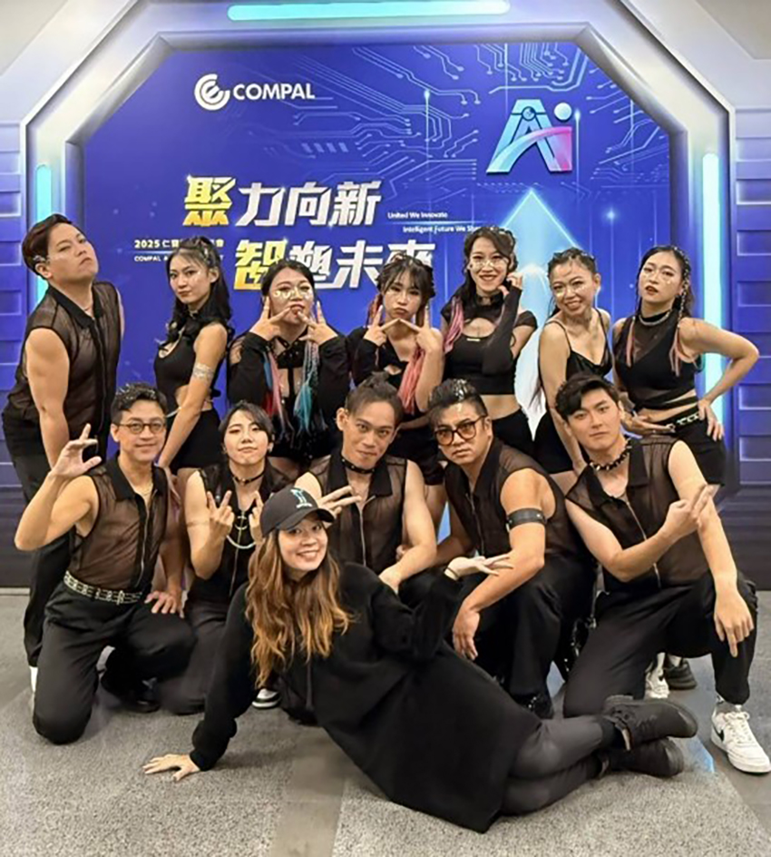
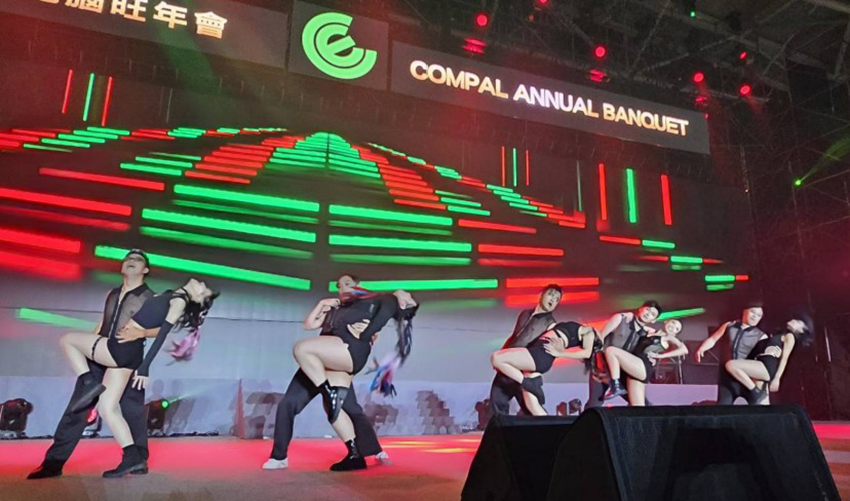
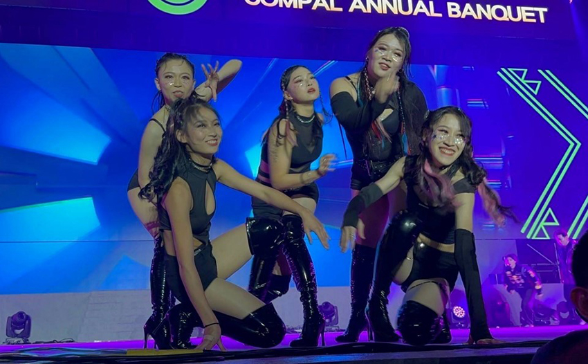

透過尾牙表演，我很開心認識了一群在舞台上一起發光發熱的夥伴。雖然表演當天我仍有許多地方表現得不夠完美，但我已經盡了最大的努力，與大家攜手完成了這場演出，這讓我感到無比滿足。
|  |
當初看到公司公告尾牙表演的報名資訊時，我猶豫了一下，擔心自己沒有舞蹈基礎、學不會動作，也擔心萬一加班或出差，無法配合上課。然而，內心還是很想參加，反正公告上也寫沒跳過舞的人也可以參加，時間不好配合的話，再想辦法調整就好。於是，在期待與不安交織的心情下，我填下了報名表。
|  |
第一堂課開始後，我認識了一些新朋友，但一開始還記不住大家的名字。舞步則是按照老師的帶領，一段一段學，再慢慢拼湊起來，透過不斷重複練習來記住動作。除了正式課程，公司還額外提供跳舞教室，讓我們能夠自主複習老師教過的內容。
|  |
對我來說，跳舞是一大挑戰，幾乎是零經驗。雖然之前有參加過體驗課，但印象中我總是抓不準拍子，也記不住動作。這次學習的過程，前期主要是記住舞步，還不太注重細節雕琢，雖然偶爾還是會忘記，但因為抱持著學習的熱情，整體來說還是學得很開心。我也希望自己能跟上大家的進度，所以只要有時間就會練習，儘管有時因工作或其他事務無法參與團練。很感謝福委貼心地安排了上課錄影，讓我們能透過影片補上進度，我也很感謝主管在得知我參加尾牙表演後，給予支持與鼓勵。
|  |
隨著表演日逐漸逼近，大家開始變得緊張，經常在下班後相約找地方練習。公司也很貼心地提供場地，讓我們不用到地下街與學生們搶鏡子。
|  |
倒數一個月，開始進入動作細節調整與隊形排練的階段，這對我來說是最挫折的時刻。我不僅難以掌握節奏，肢體也彷彿不受控制，經常被點名需要調整動作。再加上女舞需要穿又細又高的高跟靴，每次練習完回家，不只累到不行，腳底也酸痛不已。然而，為了呈現最好的演出，努力調整與練習，真的很感謝老師耐心指導，幫助我修正動作，並給予鼓勵。此外，夥伴們也不吝嗇給我建議，陪我一起練習，甚至幫我數拍子，讓我能更快跟上進度。
|  |
表演當天，我們一早就到會場彩排。站上舞台時，緊張感湧上心頭，導致我在彩排時不自覺地加快節奏，表現得不如預期。
|  |
到了正式演出前，夥伴們相互鼓勵，老師也提醒我們：「享受舞台，玩得開心就好！」這讓我更專注於當下。雖然還是有些緊張，但我努力展現出自己最好的狀態。當表演順利完成的那一刻，真的感到無比開心。
回顧這次經驗，我發現最珍貴的並不是舞台上的掌聲，而是整個過程帶來的成長與收穫。從零舞蹈基礎到站上舞台，這不只是學習舞步，更是一場挑戰自我、突破舒適圈的旅程。我學會了如何克服節奏感的困難，在團隊中互相扶持，也體會到努力與堅持帶來的成就感。而最難能可貴的，是這段經歷讓我變得更加勇敢，去挑戰未知的自己。
|  |